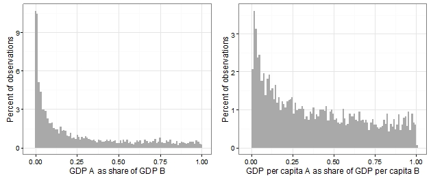

For the last twenty years, countries across the globe have negotiated a large number of preferential trade agreements. In parallel, trade negotiations have taken place in the framework of the World Trade Organization. These negotiations not only deal with tariffs, but also cover investments, competition policy, labour standards and much more. With much at stake, the extent to which different countries are able to achieve their preferred outcomes in these negotiations is of broad interest.
In this project, which is financed by the European Research Council and will run from 2017-2022, we address this topic by asking: what makes some countries have more bargaining power than others in these negotiations? In other words, what explains variation in bargaining power in trade negotiations?
Relevance: an important challenge
The question of bargaining power in trade negotiations is highly pertinent because a large number of the trade agreements that are currently being negotiated bring together countries of very different sizes and levels of economic development. The Transpacific Partnership (TPP), which was signed in 2015, is a prime example in that it combines small countries such as Chile and Peru and large countries such as Japan and the United States. The figure below shows the extent to which PTA negotiations are asymmetric. In the left pane, for each of the pairs of countries participating in the 309 PTAs signed since 2000 (a total of 5,212 pairs of countries), the figure shows the smaller country's gross domestic product (GDP) as a share of the larger country’s GDP (the GDP data are from World Bank 2015). The distribution is clearly positively skewed: for nearly two thirds of the dyads, the smaller country's GDP amounts to a quarter or less of the larger country's GDP. The right pane shows the same distribution for GDP per capita. It exhibits a similar pattern: many poor countries sign trade agreements with rich countries. In 42 percent of the cases, the poorer country's GDP per capita is a quarter or less of the richer country's GDP per capita.

Contribution of the project
In terms of theorizing, this project innovates by putting forward an original argument on how contemporary changes in the global economy – namely the globalization of production – counteract market size as the key determinant of bargaining power in international trade negotiations. The starting point is that twenty-first century trade negotiations can only be understood by taking into account the reality of twenty-first century trade relations.
Empirically, this project is ground-breaking because of the collection of a large amount of systematic empirical evidence, going far beyond what is currently used to assess bargaining power in trade negotiations. This includes qualitative evidence from case studies and quantitative evidence on both the perception of power and the actual outcomes of trade negotiations. The project will use a survey to collect original data on the trade preferences of decision-makers and their perceptions of power in international trade negotiations. It will also gather novel data on the contents of trade agreements. Finally, it will put together a dataset on the stock market effects of trade agreements.
Methodologically, the present project innovates by proposing a variety of approaches to measuring bargaining power in international negotiations and by comparing and contrasting their results. Measuring power is notoriously difficult. How to improve the measurement of power is thus an important methodological question, with implications far beyond the study of power in trade negotiations. The combination of different approaches to measure power brings up important methodological questions that the project will shed light on: to what extent can the various measures be compared? How can they be reconciled? Which measure is the most valid, which is the most reliable?